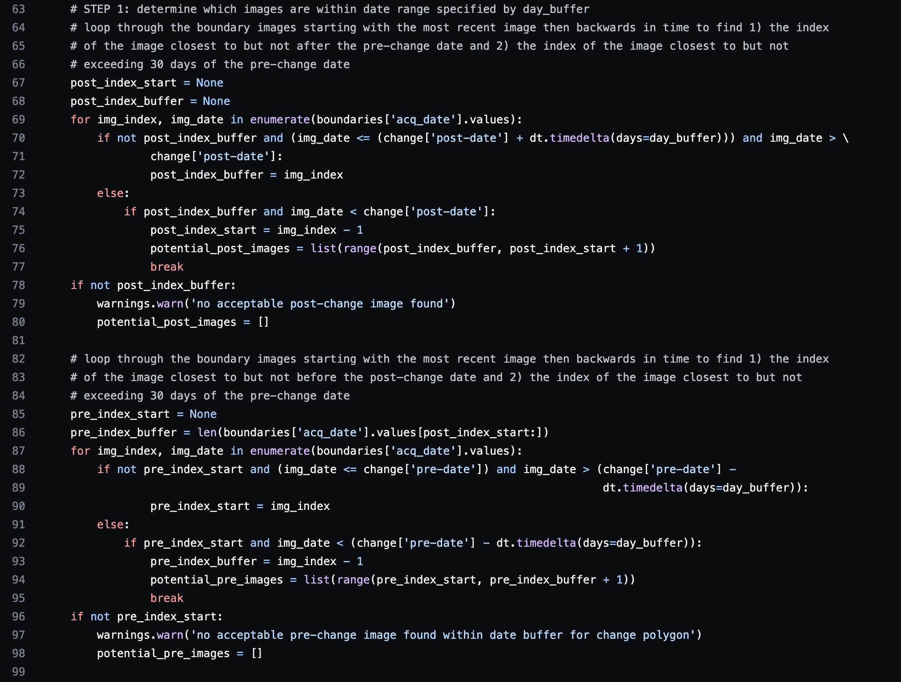

Variables, Data Types, and if Statements
Contents
Variables, Data Types, and if Statements¶
Lesson Content
👩🏽💻 Communicating with the computer
👣 Assigning Variables
🧩 Data Types
🔳 Booleans and Comparisons
❓ if Statements
Context¶
Today we are getting started with code! We’ll be:
Thinking about why we code
Learning to use a Jupyter notebook
Establishing some of the base ingredients in code such as variables, data types, and operators and getting familiar with the associated vocabulary
The different ideas might feel a little disconnected right now, but eventually these building blocks will work together to help us to make more complicated things.
Jupyter Notebooks¶
The primary way of writing code during lessons this summer will be in Jupyter Notebooks. Notebooks are a bit of a unique way of writing code, but they have become popular in data science fields due to the flexbility they give the user to iterate on the same dataset many times and their great visualization support. Read more in depth about Jupyter notebooks here.
Jupyter notebooks are made up of cells, or individual chunks of input. Cells can be either markdown cells, which are made up of text, or code cells. You run the code in a cell by hitting the Run button in the top bar or using shift + enter.
A few links for interested individuals to explore:
📝 Check your understanding
Create a new cell in your notebook. Change it from a code cell to a markdown cell, type something into the cell and then run it.
👩🏽💻 Communicating with the computer¶
Programming is about getting a computer to do something for you. You do this all the time when you use a computer. You tell it to access the internet or download a file for you. You tell it take a screenshot and save it to your Desktop. In those scenarios you are telling a computer to do something using your mouse or trackpad. In coding you are telling a computer what to do by learning how to write text that the computer understands.
One of the first tasks programmers ask a computer to do is repeat a line of text back to you. In Python, the instruction for that is print(). Learning what words the computer understands is called learning syntax.
Vocabulary
Syntax: The words and characters of a programming language which a computer can interpret. The computer interprets the syntax to do an action for the programmer.
# repeat a line of text back to you: "printing"
# modify it to change the output
print('Hello, world')
print("Boa tarde, mundo") # single ' and double " are the same in Python
Hello, world
Boa tarde, mundo
# you can also print numbers
print(3.1415927)
3.1415927
# you can print a couple of things together if you seperate them by commas
print('hi ', 8943)
hi 8943
# you can print the output of math calculations
print(4/8+5)
5.5
print statements seem a little useless on their own, but when you have a more complex block of code they are helpful for confirming that what you think is happening is, in fact, happening. They are useful for finding errors in your code as well.
💡 Key Ideas
In programming we learn which words the computer understands (aka the syntax of the Python language) and we use those to get the computer to do something for us.
Right now the computer is just parroting back text, but eventually it could be doing huge mathematical calculations, creating a stunning map, or connecting us to an exciting dataset!
📝 Check your understanding
Write a cell of code to display the phrase: I am programming!
🌀 More Info: Programming Languages
There are tons of different programming languages and each one has different strengths and weakness, meaning that they have syntax to let you do different types of things. For example, the language R is known for having great statistics support. Julia allows a user to control what the code is doing closer to the underlying computer hardware, making it good for high performance computing. Matlab is another common language, but it is a proprietary software, or a software that you have to pay for. Python is an open source software, meaning that the source code that Python is built on is openly available and anyone could propose changes or make their own flavor. If you like legal nuance you can get into the details of Free and Open Source Software (FOSS) on the FOSS wikipedia page.
👣 Assigning Variables¶
As programming tasks get more complex we want to be able to keep track of many values at once. We do this is by assigning a name to values we want to keep track of. When we give a value a name it becomes a variable. There are different ways to think about variables that are related to the location of an object on your computer, but for practical use I like this framing.
# Assigning the number 7 to a variable I named x
x = 7
# Assigning the number 2 to a variable I named y
y = 2
# assigning the text 'pineapple' to a variable I named my_lunch
my_lunch = 'pineapple'
Vocabulary
Variable: A named value. The same variable will often change values throughout a program.
How do we see our variables? We print them.
print(x)
print('y is', y)
7
y is 2
📝 Check your understanding
print the sum of your two variables x and y
An example with words instead of numbers
today = 'Sunday' # Change this to be the actual day
tomorrow = 'Friday'
print(today)
Sunday
🌟 Key Clarification - Order of Execution¶
One fundamental principle of code is that it executes things in a certain order - from top to bottom.
print('this will print first')
print('this will print second')
this will print first
this will print second
We can make this difference really obvious by using the syntax time.sleep(3) to force Python to wait 3 seconds after it executes the first line.
import time
print('this will print first')
time.sleep(3)
print('this will print second')
this will print first
this will print second
If you define a variable and change it further down in the cell the output value will be the most recent value.
today = 'Sunday'
print('print #1', today)
today = 'Thursday'
print('print #2', today)
today = 'Arbor Day'
print('print #3', today)
print #1 Sunday
print #2 Thursday
print #3 Arbor Day
The importance of sequence is also applied to the order in which you run the cells in your jupyter notebook.
today = 'Sunday'
today = 'Monday'
print(today)
Monday
💡 Key Ideas
Assiging a variable means giving a name to a value (a number, a piece of text, etc.) that you care about.
You can change the value of your variable. Code executes from top to bottom so you need to follow along to keep track of changes to your variable.
📝 Check your understanding
What is the output of the following lines of code:
x = 7
x = 9
y = x + 2
print('y is ', y)
print('x is ', x)
🧩 Data Types¶
So far in our code we have used text and numbers as our values. When we talk about our values we often refer to their data type. “text” and “number” aren’t actually data types in Python, but they do have corresponding data types:
Python Data Type |
Plain English |
Example |
|---|---|---|
|
text |
‘Tuesday’ or “Tuesday” |
|
whole number |
67 |
|
decimal number |
2.9 |
Notice that with strings we tell Python that we want that as a data type by using quotations, '' or "", around our value.
One more data type I’ll introduce today is the boolean data type. Booleans have two possible values: True or False.
Python Data Type |
English |
Example |
|---|---|---|
|
yes/no |
True or False |
# Example boolean
x = True
print(x)
True
# Capitalization matters
x = true
---------------------------------------------------------------------------
NameError Traceback (most recent call last)
/var/folders/f8/rh42xb3d1tnbw2bxsjwgym1c0000gn/T/ipykernel_4423/98516794.py in <module>
1 # Capitalization matters
----> 2 x = true
NameError: name 'true' is not defined
A list of Python data types can be found here.
Vocabulary
Data type: a way to categorize data that tells the computer something about how we are going to be using the data
📝 Check your understanding
What are the data types of the following values?
x = 9
y = 'stratocumulus'
z = False
i = 3.0
j = '2'
💡 Key Ideas
We categorize our variables using data types. This helps us understand what the expected values are.
🔳 Booleans and Comparisons¶
Booleans might seem a bit useless on their own, but they become really useful when we get into comparisons, such as greater than, less than, and equal to.

This table was taken from the W3 schools Operators page.
Examples
# Example of "equal to" syntax
4+5 == 10
False
# Example of "greater than or equal to" syntax
2**10 >= 1000
True
# Example: Checking if a state code is New York
state_code = 'WI'
state_code == 'NY'
False
🌀 More Info: Operators
The general word for doing something to a Python object is an operator. This includes regular arithmetic, which can be done using the signs + - * and /. Operators are organized into types. It isn’t that important to remember the names of the different types of operators, but it can be helpful to see them together and associate them all with taking action on an object.
Type |
Examples |
|---|---|
arithmetic operators |
addition, subtraction, multiplication, exponents |
comparison operators |
greater than, less than, equal to |
logical operators |
and, or |
You can get a list of all operators here, or by googling “python operators”.
# Python math (arithmetic operators)
(8+4+6)/3
6.0
📝 Check your understanding
Evaluate the output of the following:
2*3 <= 68 == 86 != 3+3
💡 Key Ideas
Boolean data types have a value of either
TrueorFalse.Booleans are especially handy when doing comparisons (Ex. greater than, less than)
Comparing Multiple Items¶
If you want to compare more than one thing there are two possible ways to do that, depending on what you want to happen. If you want to compare multiple items and see if they are both true, you use and. If you want to compare multiple items and see if either of them are true, you use or.
Operator |
Use |
|---|---|
|
checks if both logical statements are True |
|
checks if either logical statements is True |
True and True
True
True and False
False
True or False
True
True or True
True
Examples
4 == 4 and 5 == 6
# True and False -> False
False
5 < 6 and 6 < 7
# True and True -> True
True
4 == 4 or 5 == 6
# True or False -> True
True
📝 Check your understanding
Evaluate the output of the following:
5 <= 6 and 5 != 54 > 5 or 5 < 65 > 5 or 5 > 6
💡 Key Ideas
andandorare ways to compare groups of things at the same time.When using
andyou are asking if all of the items are true. When usingoryou are asking if any one of the items is true.
❓ if statements¶
Often after a comparison we want to make a decision based on if the comparison was True or False. For example,
if the cloud cover was less than 30 percent, start the processing. Otherwise, skip to the next image.
We do that in Python with if statements, which have the following syntax:
if <<True/False statement>>:
<<do something>>
else:
<<do something else>>
Statements contained in << >> are placeholders and should be filed with python code. The if, :, else: and indenting are all part of the required syntax for an if statement.
# If statement example
cloud_cover = 50
if cloud_cover < 30:
print('Good image for processing')
else:
print('Too many clouds for processing')
Too many clouds for processing
If you have multiple statements you can add in as many as you need after the first if using the syntax elif.
# Including elif
cloud_cover = 35
if cloud_cover < 30:
print('Good image for processing')
elif cloud_cover < 40:
print('Potentially usable')
elif cloud_cover < 50:
print('Only if we are really desperate')
else:
print('Too many clouds for processing')
Potentially usable
Notice that the if statement is exited as soon as it finds the first statement that returns true, starting from the top. So we can write an if statement like in the following example, but no matter what the code will never hit the elif:
if 3 < 4:
print('three is less than four')
elif 2 < 4:
print('two is less than four')
three is less than four
📝 Check your understanding
What will be the output of the following code block?
pH = 3.4
if pH < 7:
print('acidic')
elif pH == 7:
print('neutral')
else:
print('basic')
💡 Key Ideas
If statements allow us to do something with a comparison.
If statements use indenting as syntax and can also include
elifandelse. Code exits the if statement as soon as it finds the first True statement.
Wrapping up¶
A lot of things happened in this notebook, but they are all ideas that come together to form the building blocks of code!

📝 Check your understanding
Below is a block of code. It includes a lot of functionality that hasn’t been covered, but there are also lots of instances of the concepts from this lesson.

Find an example of:
any kind of operator
if statement
a variable getting assigned a value
a variable changing its value
any integer
any string
any line that will have a Boolean output